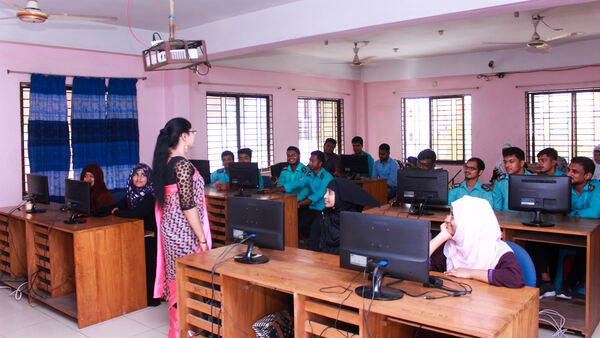

Computer Science & Technology

কম্পিউটার টেকনোলজি কি?
কম্পিউটার টেকনোলজি হচ্ছে ইঞ্জিনিয়ারিং এর সেই শাখা যেখানে কম্পিউটারের সফটওয়্যার, হার্ডওয়্যারের গবেষণা বিকাশ
নিয়ে কাজ করে। ৪র্থ শিল্পবিপ্লবের এই যুগ একদিকে যেমন আমাদের জন্য আর্শিবাদ অন্যদিকে আমাদের জন্য হুমকি স্বরূপ।
কেননা এই যুগেই মানুষ যন্ত্রের উপর বেশি নির্ভরশীল হয়ে পড়বে। আধুনিক এই যন্ত্রটির ব্যবহারে যাদের দক্ষতা থাকবে
তারাই শিল্পবিপ্লবের এই যুগে টিকে থাকতে পারবে। তাই শিল্প বিপ্লবের এই যুগে কম্পিউটার ইঞ্জিনিয়ারিং বা কম্পিউটার
টেকনোলজির বিকল্প অন্য কিছু হতে পারে না।
কম্পিউটার ইঞ্জিনিয়ারদের কর্মক্ষেত্র:
কম্পিউটারসফটওয়্যারের কোম্পানিগুলোতে Assistant Programmer পদে চাকরির সুযোগ আছে।
সরকারি-বেসরকারি প্রতিষ্ঠানের Hardware Engineering and Assistant Networking Administrator পদে চাকরির সম্ভাবনা
রয়েছে।
বিভিন্ন ব্যাংকগুলোতে Maintenance and IT Officer পদে চাকরির সুযোগ আছে।
এছাড়া বিভিন্ন Print Media and Electronics Media তে Graphics Designer, Hardware Engineering, Animation,
Programmer and Network Engineering পদে চাকরির সুযোগ আছে। মোবাইল ও ওয়ার্লেস কোম্পানিতে চাকরির সুযোগ রয়েছে।
অন্যদিকে, সরকারি ও বেসরকারি পলিটেকনিকগুলোতে জুনিয়ার ইনস্ট্রাক্টর এবং ভোকেশনাল ইনস্টিটিউটগুলোতে ইনস্ট্রাক্টর
পদেও চাকরির সুযোগ রয়েছে।
এছাড়া বর্তমানে অনলাইনে আউটসোর্সিংয়ের মাধ্যমে ইনকাম করার অনেক সুযোগ রয়েছে।